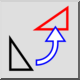

Kierrä
Työkalurivi / kuvake:


Valikko: Muokkaa > Kierrä
Shortcut: R, O
Komennot: rotate | ro
Kuvaus
Kiertää kohteita annetulla kulmalla annetun keskipisteen ympäri.
Käyttö
- Valitse kohteet, jotka haluat kiertää.
- Käynnistä tämä työkalu.
- Aseta kierron keskipiste hiirellä tai syötä koordinaatti komentoriville.
- Näytetään kiertovalintaikkuna, jossa voit syöttää kopioiden lukumäärän ja kiertokulman. Jos haluat määrittää kiertokulman hiiren osoittimella, valitse kulman syöttökentän vieressä näkyvä hiiren osoitin -painike:
Poistaaksesi alkuperäiset kohteet valitse "Delete Original", kopioidaksesi ne valitse "Keep Original". Voit myös luoda minkä tahansa määrän kopioita valitsemalla "Multiple Copies". Uudet kohteet sijoitetaan samalle kerrokselle kuin alkuperäiset ja niillä on samat attribuutit. Käyttääksesi sen sijaan nykyistä kerrosta ja nykyisiä attribuutteja valitse "Use current layer and attributes".
- Napsauta "OK".
- Jos valitsit aiemmin kiertokulman määrittämisen hiirellä, sinun täytyy nyt ensin määrittää kierron viitepiste ja sitten kohdepiste. Kiertokulma on kulma, jonka muodostavat viitepiste, kierron keskipiste ja kohdepiste.